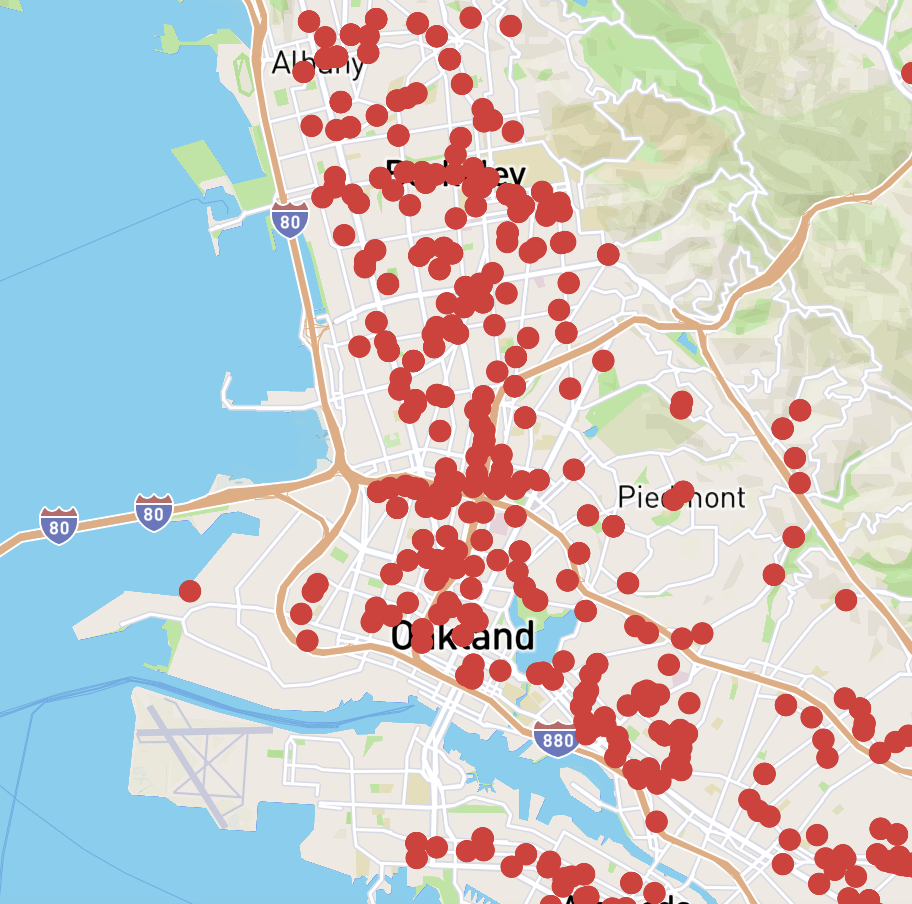
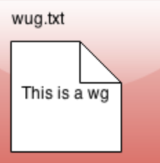
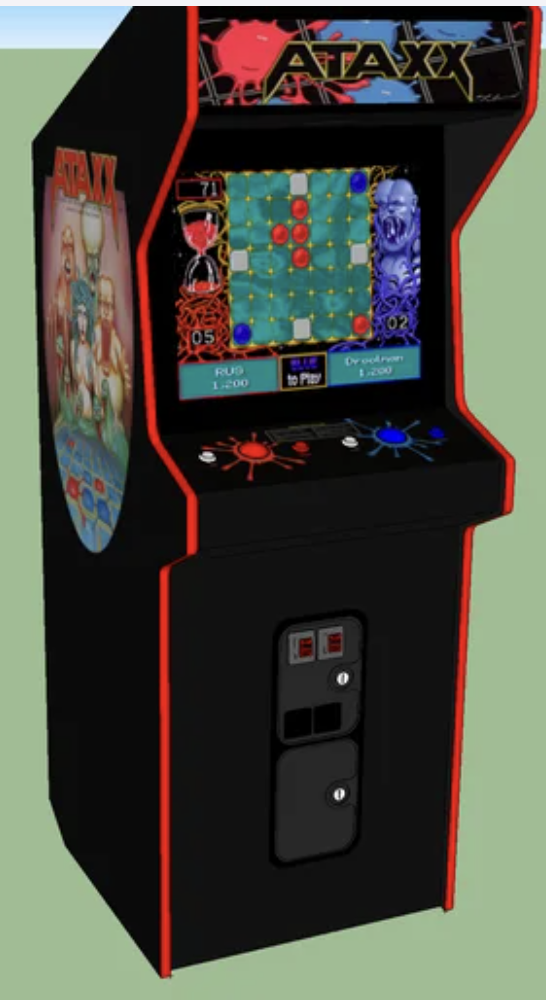

STM.
SWE Intern @ Indigitous in partnership with Basil Tech. Created a
Spiritual Topography Map
.
Web Scraped data from 400,000 churches using Python.
Created a website hosted on Vercel using React.js, HTML, and Tailwind CSS.
Organized biweekly team meetings on Notion.

Gitlet.
Implementing a version-control system that mimics some of the basic features of the popular system Git (
Project Spec
) from scratch.

Ataxx.
Ataxx is a two-person game played with red and blue pieces on a 7-by-7 board (
Project Spec
).